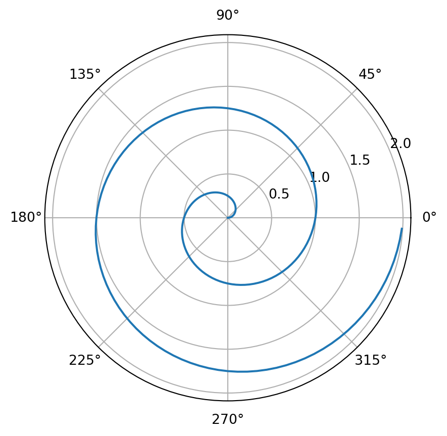

import numpy as np
import matplotlib.pyplot as plt
r = np.arange(0, 2, 0.01)
theta = 2 * np.pi * r
fig, ax = plt.subplots(
subplot_kw = {'projection': 'polar'}
)
ax.plot(theta, r)
ax.set_rticks([0.5, 1, 1.5, 2])
ax.grid(True)
plt.show()
vscode에서 quarto와 파이썬 사용하기
Don Don
June 22, 2022
quarto는 vscode에서도 잘 작동한다. Rstudio에서 quarto를 사용할 수 있지만, vscode가 파이썬에 좀 더 친숙하기 때문에 vscode를 이용하기로 마음먹었다.
quarto를 이용하면 r, python을 왔다갔다하면서 글을 쉽게 쓸 수 있는 것이 큰 장점인 것 같다(Rmd도 되긴함..).
quarto는 r에서 reticulate를 통해 파이썬을 세팅 안해도 되서, Rmd보다 편하다.
세팅하는 방법은 몇 번의 시도 끝에 한 것이기 때문에..글을 올리기 위해 실험을 다시 하는 것은 번거롭고, 내가 했던 방법에 대해 공유를 해보면
vscode 설치
python 가상환경 세팅
vscode에서 파이썬 가상환경 세팅
- python3 -m pip install matplotlib plotly_express
- python3 -m pip install jupyter(**필수**) 아래는 quarto 홈페이지에 있는 튜토리얼 코드이다. 해당 코드를 돌려보면 정상적으로 돌아가는 것을 볼 수 있다.
For a demonstration of a line plot on a polar axis, see Figure 1.